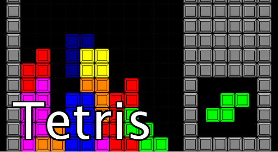

Tetris
Gra rozpoczyna się na prostokątnej planszy (początkowo pustej) zwanej tetrionem lub matriksem, ułożonej krótszym bokiem w poziomie. Tetrion ma wymiary 20 wierszy na 10 kolumn. W trakcie gry, pośrodku górnej krawędzi planszy, pojawiają się pojedynczo klocki złożone z czterech małych kwadratów nazywanych też blokami. Klocki te (określane mianem „tetrimino”) przemieszczają się w kierunku dolnej krawędzi w miarę możliwości. Kiedy jedno tetrimino opadnie na samo dno, zostaje unieruchomione, a następne ukazuje się u góry planszy. Gra trwa aż do momentu, w którym klocek nie będzie mógł pojawić się na planszy. Zadaniem gracza jest układanie tetrimino na planszy (poprzez wykorzystanie rotacji i przesuwanie klocków w poziomie) w taki sposób, aby kwadraty składające się na nie utworzyły wiersz na całej szerokości prostokąta. W takiej sytuacji wiersz ten zostaje usunięty, a pozostałe klocki opadają w kierunku dna, tworząc więcej przestrzeni dla następnych elementów. Po usunięciu określonej liczby wierszy prędkość gry wzrasta o pół sekundy, co utrudnia tym samym precyzyjne sterowanie kolejnymi tetrimino. Możliwe jest jednoczesne usunięcie maksymalnie 4 wierszy – umożliwia to tetrimino „I”. Sytuacja taka nosi nazwę identyczną jak gra, czyli „tetris”.
Graj